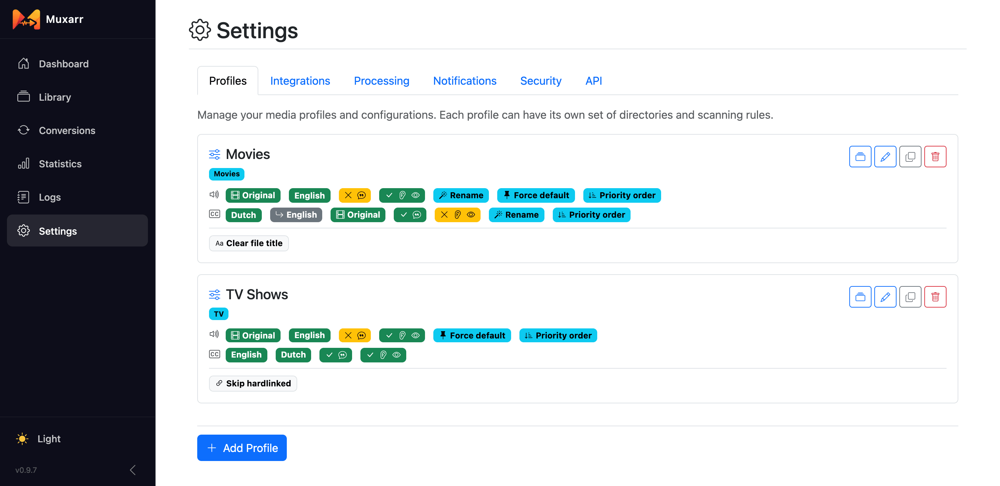
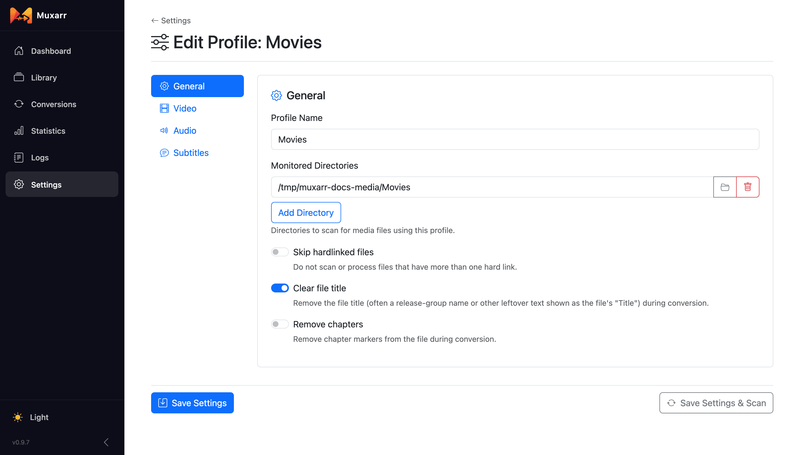
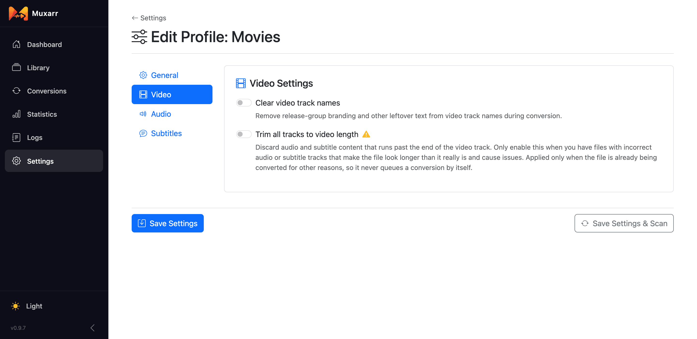
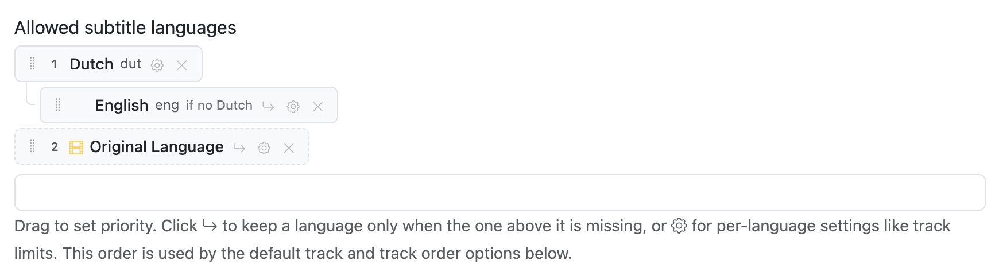
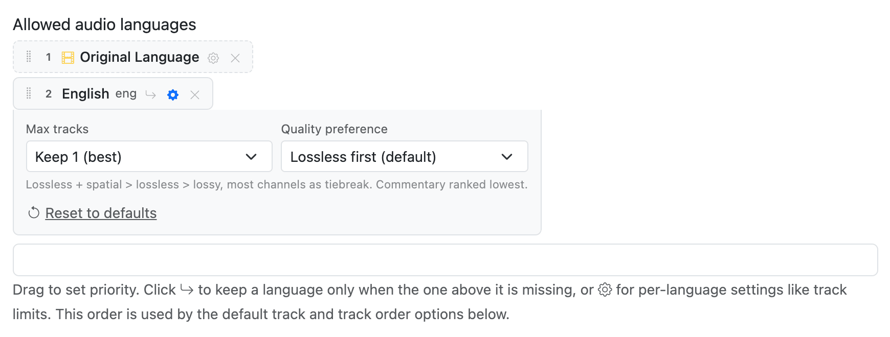

Profiles
A profile is the set of rules Muxarr applies to the files in one or more folders. This page starts with a few ready-made setups and then walks through every setting in the profile editor, tab by tab.
How profiles work
You find profiles under Settings › Profiles. Each card shows the folders it covers and a one-line summary of its audio and subtitle rules, so you can tell them apart at a glance. From here you can edit, clone or delete a profile, or jump to its files in the Library.

A file belongs to the profile whose folder it sits in, so keep folders from overlapping:
profiles for /media and /media/anime would both match an anime file and
only one of them can win. Use sibling folders instead, such as /media/movies,
/media/tv and /media/anime. When you queue a file from its details page
you can pick a different profile as a one-time override without changing anything permanently.
Both save buttons do the same thing to your settings; Save Settings & Scan also starts a library scan right away so the Library reflects the new rules.
Common setups
Five profiles people actually run. Each one is a couple of clicks; the sections after this explain every knob.
English speaker, keep the original soundtrack of foreign films
- Audio: Original Language, then English. Remove commentary. Default track: Spec compliant.
- Subtitles: English. Remove SDH.
- Connect Radarr and Sonarr so Original Language resolves.
German subtitles, English if there are none
- Subtitles: German, then English with its fallback button switched on. See Fallback languages.
Anime: Japanese audio, English subs, drop the dub
- A separate profile pointed at your anime folder.
- Audio: Japanese only. Subtitles: English, with per-language Max tracks: 2 (the button on the row) if you want to keep the "signs and songs" track next to the full one.
Smallest files
- Audio: your language with Max tracks: 1 and Smallest size. Remove commentary and audio description.
- Subtitles: your language, then turn on Exclude subtitle codecs and pick PGS and VobSub (the picture-based formats from discs). Turn on Remove SDH subtitle tracks.
Only tidy names and flags, remove nothing
- Leave Remove unwanted audio tracks and Remove unwanted subtitle tracks off.
- Switch on Standardize audio track names and Standardize subtitle track names, set Default track to Spec compliant, and on the General tab turn on Clear file title. On MKV these are metadata-only changes and take a second per file.
General

- Monitored Directories
- The folders this profile scans and manages, as paths inside the Muxarr container. If Docker maps
/srv/media/movieson your host to/moviesin the container, pick/movies. The folder button lets you browse. Add as many folders as should follow the same rules. - Skip hardlinked files
- Leave files with more than one hard link out of scans and conversions. Use it when your download client is still seeding what Sonarr or Radarr imported; see hardlinks and seeding. With this off, hardlinked files are scanned like any other and show a icon in the Library.
- Clear file title
- Remove the container title, which is usually the release name (
The.Matrix.1999.1080p.BluRay.x264-SPARKS) and shows up in some players instead of the movie's name. - Remove chapters
- Strip chapter markers.
Video

- Clear video track names
- Removes release-group text and codec dumps from the video track's name.
- Trim all tracks to video length
- For the rare file where an audio or subtitle track runs on past the end of the video and makes the whole file look longer than it is. This cuts real content, so leave it off unless you have such files. It only applies when the file is being converted anyway; it never triggers a conversion on its own.
Which languages to keep
The Audio and Subtitles tabs have the same controls, one set for each kind of track. Switch on Remove unwanted audio tracks (or subtitle tracks) and a language list appears. Type to add languages, drag the handle to change their order.
The list does three jobs at once:
- Tracks in a language that is not on the list are removed (with the exceptions below: the audio safety net, Original Language and fallbacks).
- The order is a priority: it decides which track becomes the default and, if you ask for it, the order of the tracks in the file.
- Each row can carry its own settings, such as "keep only the best track of this language".
One safety net: Muxarr never leaves a file without audio. If none of the languages on your list is present, it keeps one remaining audio track rather than produce a silent file. That is a last resort, not a choice, so it may well be a dub. When a language you expected is missing, check the preview before converting. Subtitles can go to zero, that is fine.
Untagged tracks are their own case. A file with just one audio track and no language tag is almost always the original, so Assume undetermined language is original language (on by default for audio) treats it that way, provided Sonarr or Radarr told Muxarr what the original language is. If you would rather always keep untagged tracks, add Undetermined to the list.
Original Language
Original Language is a wildcard row rather than a real language. For each file it stands for the language that film or show was made in, so an English profile still keeps the Japanese track of an anime and the French track of Amélie. It is the reason most people connect Sonarr and Radarr: that is where the original language comes from. Without them, the row matches nothing.
You can see what Muxarr knows on a file's details page, in the Original Language row. Sonarr and Radarr are polled once a day and their webhook also delivers it instantly for new imports.
Fallback languages
Sometimes a language is only wanted as a stand-in. "Give me German subtitles, but if the file has none, English will do." Listing both would keep both. Instead, click the button on the English row to make it a fallback for the language above it.

The rules, in the order you will meet them:
- A language and the fallbacks under it form a group, and only the highest one the file actually has is kept. You can chain them: German, then Dutch as a fallback, then English as a fallback below that.
- Commentary tracks and forced subtitles do not count as "having" a language. German commentary alone will not stop the English fallback from being kept, and neither will a German forced-only subtitle.
- A language that is kept for another reason stays. If Original Language is also on your list and the film happens to be in English, the English track is kept even though the English row is a fallback that lost out.
Two smaller details: SDH and audio-description tracks do count as the language being present, unless the profile removes them; and when you drag a language, its fallbacks move with it, so a group never gets split by accident.
Per-language settings
The button on a language row opens settings for that language only. The icon fills in when something is set, so you can see at a glance which rows carry overrides.

- Max tracks
- How many tracks of this language to keep: all (default), or the best 1, 2 or 3. This is how you get rid of the stereo AAC copy that ships next to the 5.1 track. Some files carry that stereo track on purpose, for older devices, so glance at the preview of a few files before you apply a limit to a whole library.
- Quality preference (audio)
- Which tracks count as "best" when limiting. Lossless first keeps TrueHD, DTS-HD and FLAC over lossy formats, with channel count only as tiebreak, so a stereo FLAC beats a 5.1 AC-3. Most channels puts surround above everything and never drops a 5.1 in favour of a stereo track; pick this when surround matters more to you than lossless. Smallest size does the opposite: lossy over lossless, fewer channels over more, for compact files. Commentary always ranks last.
- Subtitle preference (subtitles)
- Text first prefers text subtitles such as SRT and ASS: small, and most players can resize and restyle them. Image first prefers PGS and VobSub, the picture-based subtitles from discs, which look exactly as the studio made them. Accessibility keeps SDH above all else.
Regional variants
Muxarr knows the variants that actually show up in releases: French (Canada), French (France),
French (Belgium), Spanish (Spain), Spanish (Latin America), Portuguese (Brazil), Portuguese
(Portugal), Chinese (Traditional, Simplified, Hong Kong, Bilingual), Mandarin, Cantonese and
Flemish. It reads them from the language tag when a release has a proper one (fr-CA,
pt-BR) and from the track name when it does not: "VFQ", "Truefrench", "Latino",
"Castellano", "Brasileiro" and so on are all recognised.
The rule is simple:
- Listing the plain language, say French, keeps every French track, whatever region.
- Listing a variant, say French (Canada), keeps Quebec French plus French tracks that name no region, and drops tracks identified as another region (VFF, Truefrench). The editor shows a note reminding you of this.
- Two variants never cover each other, so French (Canada) plus a French (France) fallback is a clean way to say "Quebec if there is one, otherwise France".
Commentary, SDH and codecs
- Remove commentary audio tracks, Remove commentary subtitle tracks
- Drops director's and cast commentary. If commentary is all a language has, it stays: removing it would leave that language with nothing.
- Remove SDH subtitle tracks
- Drops the subtitles for deaf and hard-of-hearing viewers when a regular subtitle in the same language exists. A forced subtitle does not count as a regular one, since it only covers foreign dialogue and signs.
- Remove audio description tracks
- The audio equivalent: drops narrated tracks for blind and low-vision viewers, unless they are the only option.
- Exclude subtitle codecs
- Removes subtitle tracks of specific formats regardless of language. The usual reason is dropping picture-based PGS and VobSub in favour of text subtitles. Mind that a language with only a PGS track then ends up with no subtitles at all; the preview shows you when that happens.
These rules run inside each language, after the language list has done its work. If a rule empties a language out entirely (a French track that is PGS-only when PGS is excluded), Muxarr treats that language as absent, so a fallback below it still gets its turn.
Default track and track order
These two work with or without track removal.
Default track
- Don't change keeps whatever the file has.
- Spec compliant is the cautious choice: it only makes sure commentary, accessibility and dub tracks are not marked default, and your player picks among the rest using its own language settings.
- Always prefer first language marks the best track of your top-priority language as the default. Meant for players and TVs that have no language preference of their own.
Track order
- Don't reorder leaves the file order alone.
- Alphabetical by language and Match language priority physically reorder the tracks. Both keep the file's own order within a language, so a "forced, then regular" subtitle layout does not flip. Reordering means the file has to be rewritten (a remux, still without re-encoding), so a file whose only change is its track order still gets rewritten.
Track names
Release groups put anything in track names: codec dumps, bitrates, their own tag. Switch on
Standardize audio track names (or subtitle track names) and Muxarr renames
every track from a template. The defaults, {language} {channels} {dub} for audio
and {language} {dub} for subtitles, turn "DTS-HD MA 5.1 @ 1509kbps" into
"English 5.1" and "English (Dub)" into "English Dub".
The preview under the template updates live as you type. Placeholders:
| Placeholder | Becomes |
|---|---|
{language} | Full language name, "English" |
{nativelanguage} | Native name, "Français" |
{code} | Short code in capitals, "EN" |
{lang} | The raw language code from the track |
{codec} | Codec name, "E-AC-3" |
{channels} | Audio only: "2.0", "5.1", "7.1" |
{trackname} | The name the track has now |
{hi}, {forced}, {commentary}, {visualimpaired}, {original}, {dub} | "SDH", "Forced", "Commentary", "AD", "Original", "Dub" when the flag applies, otherwise nothing |
{flags} | All applicable labels at once, comma separated |
Leave the template empty to clear all names. Under Flag-specific overrides you can give SDH, forced, commentary, AD and dub tracks a template of their own; the first matching flag wins.
{dub} or {flags} in your template, or a dub-specific
override, or that information is lost after a remux. The editor warns you when it is missing.